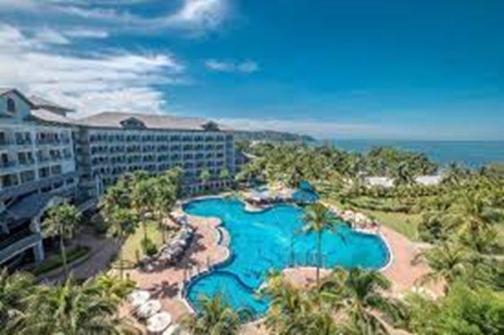
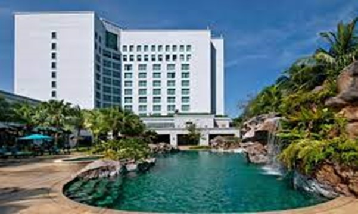
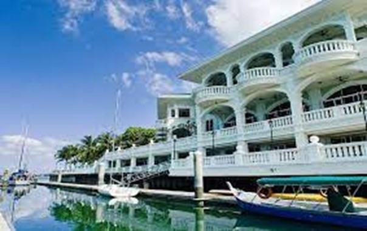
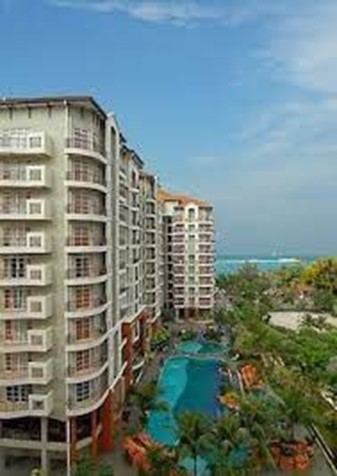

Best of Negeri Sembilan. Let's Explore!
Best of Negeri Sembilan. Let's Explore!
HOTEL, Negeri Sembilan
We serve you the top hotel until the lowest price hotel!

Thistle Port Dickson Resort
5-star hotel
RM 710 - 3 days 2 nights
KM16, Jalan Pantai Teluk Kemang, 71050 Port Dickson, Negeri Sembilan
This property is 3 minutes walk from the beach. Overlooking the Straits of Malacca, Thistle Port Dickson is surrounded by landscaped gardens and features a large free-form swimming pool. It offers relaxing stays in modern guest rooms and suites. The resort houses 5 dining options and free WiFi is accessible throughout. The units are decorated with warm colors and air conditioning. It features a flat-screen TV and ironing facilities. Selected units have a private balcony while some have a bath. The suite bathroom comes with a hairdryer and free toiletries. Guests enjoy garden and pool view from the room. Chinoise serves modern Chinese dishes, while Fresh offers a buffet spread of international and local favorites. Glass features Italian delights and a choice of indoor or outdoor dining. Cumulus and Steps also serve snacks and drinks. Guests can relax by the poolside or workout at the gym. Alternatively, you can play a game or rent a bike to explore the area. Water sports activities can be arranged at the reception and children can play in the kids' club. Other services offered include laundry
For more details, click Thistle Port Dickson Resort

Royale Chulan, Seremban
4-star hotel
RM 498 - 2 days 1 night
Jalan Dato A.S Dawood, Seremban, 70100 Seremban, Negeri Sembilan
Situated in the Lake Garden district, Royale Chulan Seremban offers 4-star accommodation with a gym and outdoor pool with an attached spa pool. It features free Wi-Fi and 4 dining options. Royale Chulan Seremban is a 1-hour drive from Kuala Lumpur International Airport and Sepang International Circuit. Royale Chulan Seremban’s rooms feature classic furnishings and comfortable armchairs with ottomans. They are fitted with a safe, satellite TV and ironing facilities. Private bathrooms have a bathtub and separate shower stalls. Guests can lounge by the landscaped outdoor pool. A well-equipped fitness centre and tennis courts await those looking to exercise. Car hire and shuttle services are provided. Buffet spreads with international dishes are available at Asiatique, while Han Pi Yuen offers fine Chinese dining and Dim Sum. Other dining options include freshly baked pastries at Sweet Seremban and drinks at Anjung Lounge.
For more details, click Royale Chulan, Seremban

Avillion Admiral Cove
4-star hotel
RM 198 - 2 days 1 night
5 ½ Mile, Jalan Pantai, 71050 Port Dickson, Negeri Sembilan
Overlooking the Straits of Melacca, contemporary-style accommodations are offered at Negeri Sembilan’s Avillion Admiral Cove, a relaxing resort by the waters of Port Dickson. It features an outdoor swimming pool and guests can enjoy meals at the in-house restaurant or have a drink at the bar. Free WiFi is available in public areas. It is 3.7 km to Port Dickson Army Museum and 5.8 km to PD Ostrich Show Farm. Kuala Lumpur International AIrport is 52.2 km from the property. Air-conditioned rooms at Avillion Admiral Cove are spread out over 2 wings and enjoy breathtaking views of the marina from a private balcony. Decorated with contemporary-style furnishings with a touch of local flavour, the seating area is fitted with a flat-screen TV and a sofa bed. En suite bathrooms include shower facilities, a hairdryer and free toiletries. Guests can approach the 24-hour front desk for luggage storage and laundry services. For a workout session, the hotel offers a fitness centre and tennis courts. Alternatively, there is a games room for guests who wish to stay indoors. Trader’s Food Shop serves a variety of tasty local and international dishes. Sailor’s Drink Shop offers refreshing cocktails and panoramic sea views
For more details, click Avillion Admiral Cove

Ancasa Residences Port Dickson
3-star hotel
RM 141 - 2 days 1 night
1/2 Jalan Pantai Teluk Kemang, 71050 Port Dickson, Malaysia
This property is 2 minutes’ walk from the beach. Located in the southern region of Peninsular Malaysia. Ancasa Residences, Port Dickson by Ancasa Hotels & Resorts provides a large outdoor swimming pool, 3 dining options and spa treatments. Ancasa Residences, Port Dickson by Ancasa Hotels & Resorts is an hour's drive from Kuala Lumpur International Airport. Free parking is available on site. The homely suites are well appointed with spacious interiors and modern Asian furnishings. Each has a private balcony, living area and kitchenette. A TV and tea/coffee maker are also provided. Guests can work out in the fitness centre or try water activities like snorkelling and kayaking. Enjoy an evening of karaoke with friends at BabaReeba Restaurant or steamboat dishes at Steamboat Express Restaurant. Room service is available.
For more details, click Ancasa Residences Port Dickson
 - HAZIQAH
- HAZIQAH
- SUKMA